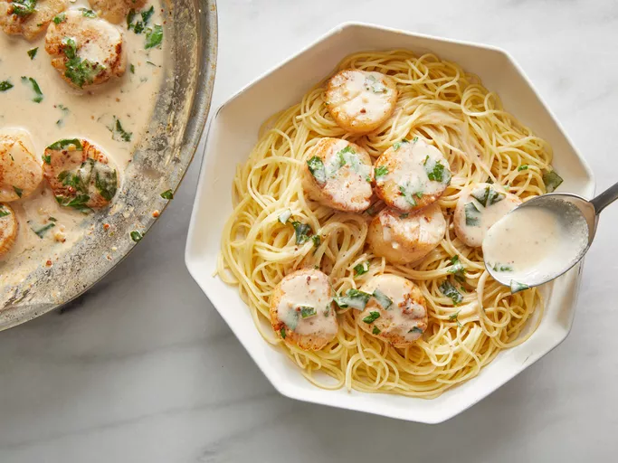

Savory Sea Scallops and Angel Hair Pasta

Description
This scallop pasta dish is a very simple, easy-to-prep meal that you will most likely be asked to make again! The taste, if carefully prepared and not overcooked, is incredible.
Ingredients
- Pasta
- Garlic and Butter
- Scallops
- Herbs
- Lemon juice
- Seasonings (salt and pepper)
- Cream
- Parmesan
Steps
- Cook the pasta
- Cook the garlic in butter. Add the scallops and herbs, then cook until firm.
- Reduce the heat and add the juice and seasonings. Thicken with cream, if desired.
- Serve with Parmesan, if desired.